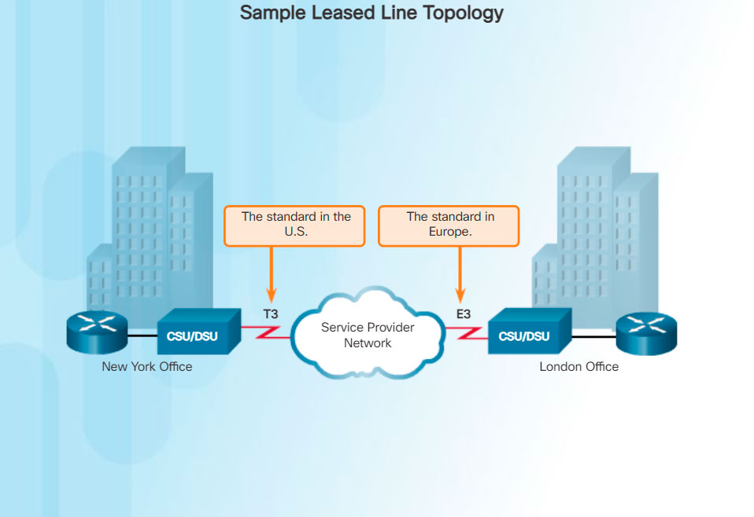

When permanent dedicated connections are required, a point-to-point link is used to provide a pre-established WAN communications path from the customer premises to the provider network. Point-to-point lines are usually leased from a service provider and are called leased lines.
Leased lines have existed since the early 1950s and for this reason, are referred to by different names such as leased circuits, serial link, serial line, point-to-point link, and T1/E1 or T3/E3 lines. The term leased line refers to the fact that the organization pays a monthly lease fee to a service provider to use the line. Leased lines are available in different capacities and are generally priced based on the bandwidth required and the distance between the two connected points.
In North America, service providers use the T-carrier system to define the digital transmission capability of a serial copper media link, while Europe uses the E-carrier system, as shown in the figure.

For instance, a T1 link supports 1.544 Mb/s, an E1 supports 2.048 Mb/s, a T3 supports 43.7 Mb/s, and an E3 connection supports 34.368 Mb/s. Optical Carrier (OC) transmission rates are used to define the digital transmitting capacity of a fiber-optic network.
There are advantages to the use of leased lines:
There are also disadvantages to the use of leased lines:
Cost - Point-to-point links are generally the most expensive type of WAN access. The cost of leased line solutions can become significant when they are used to connect many sites over increasing distances. In addition, each endpoint requires an interface on the router, which increases equipment costs.
Limited flexibility - WAN traffic is often variable, and leased lines have a fixed capacity, so that the bandwidth of the line seldom matches the need exactly. Any change to the leased line generally requires a site visit by ISP personnel to adjust capacity.
The Layer 2 protocol is usually HDLC or PPP.